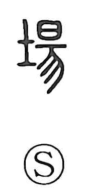

場

Kun: ba | On: jo
place ・ site ・ field ・ ground
Explanation
場 is a phono-semantic character: the left component 土 marks the ground, while 易 supplies the sound and a resonant idea. In Shirakawa’s reading, 易 depicts a piece of jade set on a pedestal, its radiance streaming downward—an image tied to the rite of tamafuri, the “shaking of the spirit,” in which jade was believed to quicken human vitality. 場 thus originally named the ground set apart for such ceremonies, the sacred precinct where deities were revered—the festival yard (matsuri no niwa). From this sense of a consecrated site, the meaning broadened to a harvest field, an empty lot, and, more generally, any place or locale.